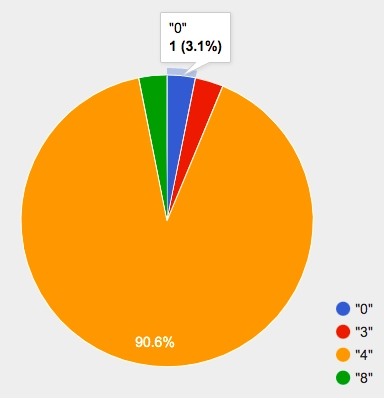

Bar and Pie Charts
Students learn to generate and compare pie charts & bar charts, explore other plotting & display functions, and (optionally) design an infographic.
|
Lesson Goals |
Students will be able to:
|
|
Student-facing Lesson Goals |
|
|
Materials |
|
|
Preparation |
|
|
Supplemental Resources |
bar chart-
a display of categorical data that uses bars positioned over category values; each bar’s height reflects the count or percentage of data values in that category
categorical data-
data whose values are qualities that are not subject to the laws of arithmetic
contract-
a statement of the name, domain, and range of a function
domain-
the type or set of inputs that a function expects
percentage-
a ratio showing the parts per hundred
pie chart-
a display that uses areas of a circular pie’s slices to show percentages in each category
| Pie and Bar Charts | 30 minutes |
Overview
Students extend their understanding of Contracts and function application, learning new functions that consume Tables and produce displays and plots.
Launch
-
Where have you seen infographics and graphs used to display data in the real world?
Here is the Contract for a function that makes pie charts:
# pie-chart :: Table, String ‑> Image
And here is an example of using the function:
pie-chart(animals-table, "legs")
-
What is the Name of this function?
-
pie-chart
-
-
How many inputs are in its Domain?
-
two
-
-
In the Interactions Area, type
pie-chart(animals-table, "legs")and hit "Enter". What happens?-
An interactive pie chart appears.
-

{kind=link}
Hovering over a pie slice reveals the label, as well as the count and the percentage of the whole. In this example we see that there is 1 animal with 0 legs, representing 3.1% of the population.
We can also resize the window by dragging its borders. This allows us to experiment with the data before closing the window and generating the final, non-interactive image.
The function pie-chart consumes a Table of data, along with the name of a categorical column you want to display. The computer goes through the column, counting the number of times that each value appears. Then it draws a pie slice for each value, with the size of the slice being the percentage of times it appears. In this example, we used our animals-table table as our dataset, and made a pie chart showing the distribution of the number of legs across the shelter.
|
People aren’t Hermaphrodite?
When students make a display of the |
Investigate
Here is the Contract for another function, which makes bar charts:
# bar-chart :: Table, String ‑> Image
-
Which column of the animals table tells us which species the animal is?
-
The second column, "species"
-
-
Use
bar-chartto make a display showing how many animals there are of each species. -
Experiment with pie and bar charts, passing in different column names. If you get an error message, read it carefully!
-
What do you think are the rules for what kinds of columns can be used by bar-chart and pie-chart?
-
When would you want to use one chart instead of another?
To dig deeper into pie charts and bar charts, have students complete Bar & Pie Chart - Notice and Wonder. They can also focus on one display at a time using Pie Chart - Notice and Wonder or Bar Chart - Notice and Wonder.
Complete Matching Bar Charts to Pie Charts.
Common Misconceptions
-
Pie charts and bar charts can show counts or percentages of categorical data. If there are more people with brown hair than blond hair, for example, a pie chart of hair color will have a larger slice or longer bar for "brown" than for "blond". In Pyret, pie charts show percentages, and bar charts show counts.
-
A pie chart can only display one categorical variable, but a bar chart might be used to display two or more. Pie charts have a wedge for each represented category. Unlike in bar charts, empty categories will not be included in a pie chart. When comparing bar charts, it is important to read the scales on the y-axes. If the scales do not match, a taller bar may not represent a larger value.
-
Bar charts look a lot like another kind of chart - called a "histogram" - which are actually quite different because they display quantitative data, not categorical. This lesson focuses entirely on pie- and bar charts.
Synthesize
Confirm that students have correctly matched the displays on Matching Bar Charts to Pie Charts.
-
What strategies did you use to match the bar charts to the pie charts?
-
Which displays do you find it easier to interpret? Why?
-
What information is provided in bar charts that is hidden in pie charts?
-
In a bar chart, categories with no values are shown as empty categories, but there are no wedges for categories with 0% on a pie chart.
-
-
Why might this sometimes be problematic?
-
Sample Answer: If a service isn’t reaching a sector of the population, it’s easier to ignore the issue if that population doesn’t get represented in the display.
-
Bar Charts and Pie Charts display how much of the sample belongs to each category. If they are based on sample data from a larger population, we use them to infer the proportion of a whole population that might belong to each category.
Bar Charts and Pie Charts are mostly used to display categorical columns.
While bars in some bar charts should follow some logical order (alphabetical, small-medium-large, etc), the pie slices and bars can technically be placed in any order, without changing the meaning of the chart.
|
Mini Project: Making Infographics Infographics are a powerful tool for communicating information, especially when made by people who actually understand how to connect visuals to data in meaningful ways. Making an Infographic is an opportunity for students to become more flexible math thinkers while tapping into their creativity. This project can be made on the computer or with pencil and paper. There’s also an Infographics Rubric to highlight for you and your students what an excellent infographic includes. |
| Exploring other Displays | 25 minutes |
Overview
Students freely explore the Data Science display library. In doing so, they experiment with new charts, practice reading Contracts and error messages, and develop better intuition for the programming constructs they’ve seen before.
Launch
There are lots of other functions, for all different kinds of charts and plots. Even if you don’t know what these plots are for yet, see if you can use your knowledge of Contracts to figure out how to use them.
Investigate
-
Complete Exploring Displays and (More) Exploring Displays.
-
Now, turn to What Display Goes with Which Kind of Data? and see if you can identify what kind of data each display needs!
Have students share their answers and discuss.
Common Misconceptions
There are many possible misconceptions about displays that students may encounter here. But that’s ok! Understanding all those other plots is not a learning goal for this lesson. Rather, the goal is to have them develop some loose familiarity, and to get more practice reading Contracts.
Synthesize
-
What displays did you find that work with just one column of data?
-
pie and bar charts, histograms and box plots
-
-
What displays did you find that work with more than one column of data?
-
scatter plots and lr-plots
-
-
What displays did you find that work with categorical data?
-
pie and bar charts
-
-
What displays did you find that work with quantitative data?
-
histograms, box plots, scatterplots, and lr-plots
-
Today you’ve added more functions to your toolbox. Functions like pie-chart and bar-chart can be used to visually display data, and even transform entire tables!
You will have many opportunities to use these concepts in this course, by writing programs to answer data science questions.
|
Extension Activity Sometimes we want to summarize a categorical column in a Table, rather than a pie chart. For example, it might be handy to have a table that has a row for dogs, cats, lizards, and rabbits, and then the count of how many of each type there are. Pyret has a function that does exactly this! Try typing this code into the Interactions Area: What did we get back?
Sometimes the dataset we have is already summarized in a table like this, and we want to make a chart from that. In this situation, we want to base our display on the summary table: the size of the pie slice or bar is taken directly from the count column, and the label is taken directly from the value column. When we want to use summarized data to produce a pie chart, we have the contract for another function:
And an example of using that function (applying
|
🔗Additional Exercises
These materials were developed partly through support of the National Science Foundation,
(awards 1042210, 1535276, 1648684, and 1738598).  Bootstrap by the Bootstrap Community is licensed under a Creative Commons 4.0 Unported License. This license does not grant permission to run training or professional development. Offering training or professional development with materials substantially derived from Bootstrap must be approved in writing by a Bootstrap Director. Permissions beyond the scope of this license, such as to run training, may be available by contacting contact@BootstrapWorld.org.
Bootstrap by the Bootstrap Community is licensed under a Creative Commons 4.0 Unported License. This license does not grant permission to run training or professional development. Offering training or professional development with materials substantially derived from Bootstrap must be approved in writing by a Bootstrap Director. Permissions beyond the scope of this license, such as to run training, may be available by contacting contact@BootstrapWorld.org.